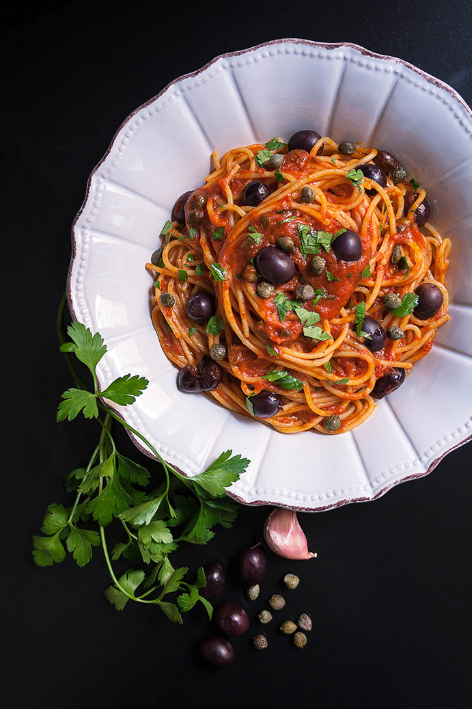

1鍋中橄欖油用中小火把蒜末煎香呈淡金黃色。
2加入去籽橄欖和酸豆後拌炒幾下。
3倒入番茄罐頭，用小火煮10來分鐘，或到你喜歡的濃稠程度。
4醬汁完成時加入一半的新鮮巴西利碎。我喜歡比較乾的醬汁，用湯匙劃過可看見鍋底來當標準。
5加入煮好的義大利麵，攪拌均勻後即可上桌，用剩下的新鮮巴西利碎裝飾。

首頁綜合美介紹 青醬蛤蠣義大利麵 紅醬海鮮義大利麵 奶油培根義大利麵 學習心得
練習音樂與視頻
Your browser does not support the audio tag. Your browser does not support the video tag.